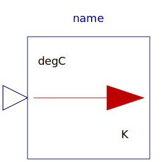
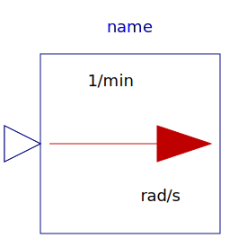
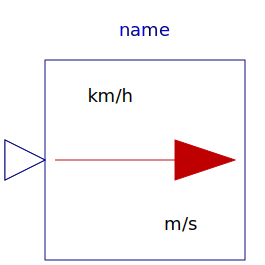
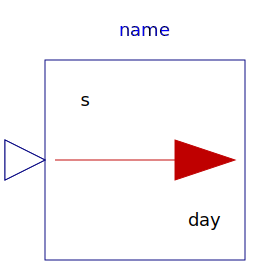
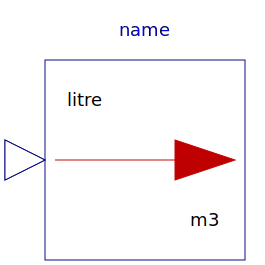
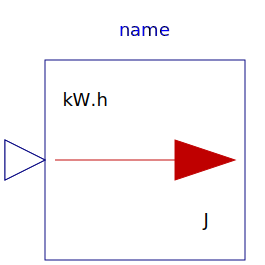
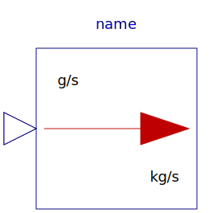

This package consists of blocks that convert an input signal with a specific unit to an output signal in another unit (e.g., conversion of an angle signal from "deg" to "rad").
| Name | Description |
|---|---|
| Convert from Kelvin to degCelsius | |
|  From_degC | Convert from degCelsius to Kelvin |
| Convert from Kelvin to degFahrenheit | |
| From_degF | Convert from degFahrenheit to Kelvin |
| Convert from Kelvin to degRankine | |
| From_degRk | Convert from degRankine to Kelvin |
| Convert from radian to degree | |
| From_deg | Convert from degree to radian |
| Convert from radian per second to revolutions per minute | |
|  From_rpm | Convert from revolutions per minute to radian per second |
| Convert from metre per second to kilometre per hour | |
|  From_kmh | Convert from kilometre per hour to metre per second |
|  To_day | Convert from second to day |
| Convert from day to second | |
| Convert from second to hour | |
| Convert from hour to second | |
| Convert from second to minute | |
| Convert from minute to second | |
| Convert from cubic metre to litre | |
|  From_litre | Convert from litre to cubic metre |
| Convert from Joule to kilo Watt hour | |
|  From_kWh | Convert from kilo Watt hour to Joule |
| Convert from Pascal to bar | |
| Convert from bar to Pascal | |
| Convert from kilogram per second to gram per second | |
|  From_gps | Convert from gram per second to kilogram per second |